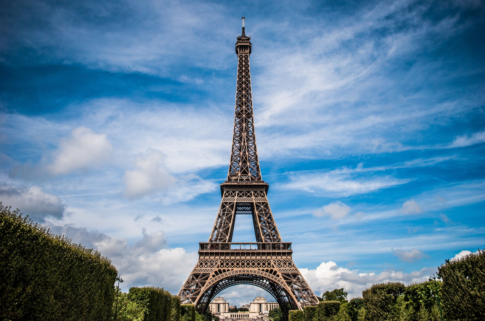

Você Sabia? Curiosidades do Mundo!
A Origem do "Obrigado" e "Obrigada"
Você já parou para pensar na origem da palavra "obrigado"? Ela vem do latim "obligatus", que significa "comprometido" ou "grato". Quando dizemos "obrigado", estamos expressando que nos sentimos na obrigação de retribuir o favor ou a gentileza. Mulheres usam "obrigada" porque o adjetivo concorda com o gênero de quem fala.
Por Que o Céu é Azul?
O céu é azul devido a um fenômeno chamado espalhamento de Rayleigh. A luz do sol, que parece branca, é na verdade composta por todas as cores do arco-íris. Quando essa luz atinge a atmosfera terrestre, as moléculas de ar espalham a luz azul mais do que as outras cores, porque ela viaja em ondas mais curtas e menores. É por isso que vemos o céu azul durante o dia.

O que é a Grande Barreira de Coral?
A Grande Barreira de Coral é o maior sistema de recifes de coral do mundo, localizado na costa nordeste da Austrália, e é um Patrimônio Mundial da UNESCO, conhecido por sua biodiversidade e beleza natural.

Existe um Rio que ferve na Amazônia?
No coração da floresta amazônica peruana, um rio desafia todas as leis da natureza. Seu nome indígena é Shanay-timpishka, que significa “fervido com o calor do sol”. Mas este calor não vem do sol. Suas águas chegam a ferver, atingindo temperaturas de até 100 graus Celsius, capazes de cozinhar qualquer animal que nelas caia.

A Grande Muralha da China é visível do espaço?
A Grande Muralha da China é uma das construções mais emblemáticas do mundo, com uma extensão de mais de 20.000 quilômetros. Uma curiosidade impressionante sobre essa obra é que, de fato, é possível enxergá-la do espaço. Astronautas relataram conseguir avistar a muralha enquanto orbitavam a Terra, mostrando a grandiosidade e o impacto visual dessa estrutura milenar.

A Torre Eiffel pode crescer e encolher?
Um dos ícones mais famosos da França, pode variar sua altura em até 15 centímetros, dependendo da temperatura ambiente. Isso ocorre devido à dilatação e contração do metal com as mudanças de temperatura, demonstrando a engenhosidade da engenharia por trás dessa estrutura monumental.

Curiosidades científicas
O Sol converte cerca de 600 milhões de toneladas de hidrogênio em hélio a cada segundo em virtude do processo de fusão nuclear.

Curiosidades científicas
A Terra orbita o Sol a uma velocidade de, aproximadamente, 107 mil km/h. Imagina dirigir um carro nessa velocidade...

Curiosidades sobre animais
As formigas são capazes de levantar até 50 vezes seu próprio peso. Quantos supinos você levanta? Rsrs

Curiosidades sobre animais
Os ursos-polares são, praticamente, invisíveis pelas câmeras de calor em virtude da eficiente camada de gordura isolante que os protege do frio.

Referências